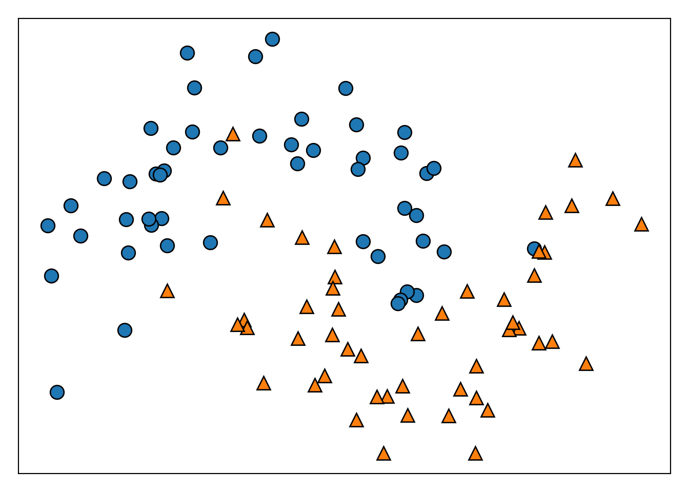
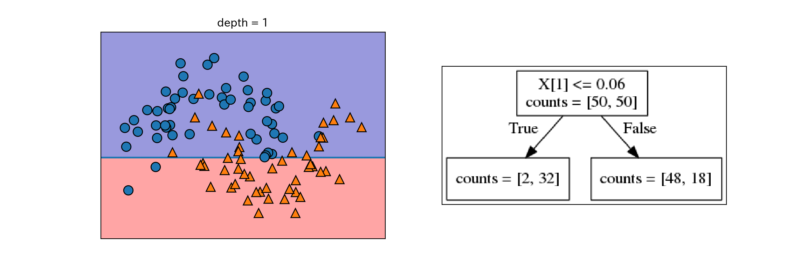
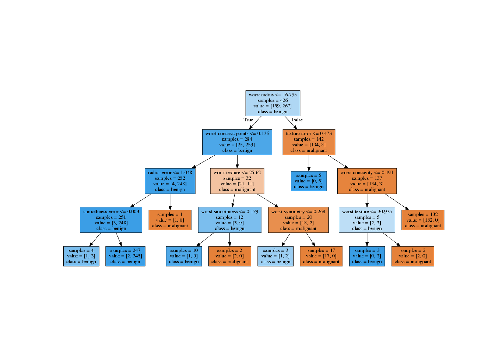

2.7 決定木
- 回帰にも分類にも使える。
- Yes/Noで答えられる質問で出来た木を構成する。
mglearn.plots.plot_animal_tree()
2.7.1 決定木の構築
- 2つの特徴量、2つのクラスを持つデータセットtwo_moonを使用する。
- 2つの特徴量のなす平面上で2つのクラスが半月を組合せたように分布している。
from sklearn.datasets import make_moons
from mglearn.tools import discrete_scatter
X, y = make_moons(n_samples=100, noise=0.25, random_state=3)
plt.figure()
ax = plt.gca()
discrete_scatter(X[:, 0], X[:, 1], y, ax=ax)
ax.set_xticks(())
ax.set_yticks(())
- 木の構築は、データセットの分割の繰り返しである。分割された部分を葉と呼ぶ。
- 分割によりテストが1段階増える(e.g. X[1]は0.06以上であるか？)
- 各ステップで分割は情報量が最も多くなるように（最もクラスを分割するように）行われる。
- 分割はテストによってデータセットが完全に分類できるようになるまで進む。
- 1つの葉に1種類のクラスや値しか含まない状態になった木を純粋(pure)と呼ぶ。
以下にtwo_moonから純粋な決定木を作成する過程を示す。
for i, max_depth in enumerate([1, 2, 9]):
fig, ax = plt.subplots(1, 2, figsize = (12, 4), subplot_kw={'xticks': (), 'yticks': ()})
tree = mglearn.plot_interactive_tree.plot_tree(X, y, max_depth = max_depth, ax = ax[0])
ax[1].imshow(mglearn.plot_interactive_tree.tree_image(tree))
plt.show()
plt.close()

決定木はターゲットがクラスではなく連続値になっても同じように機能するので、回帰にも使える。
2.7.2 決定木の複雑さの制御
- 純粋になるまで分割を続けるとルールが複雑になりすぎ、容易に過剰適合してしまう。
- 過剰適合を防ぐ戦略は2つある。
- 事前枝刈り: 構築過程で木の生成を止める。単に枝刈りとも。
- 木の深さを制限する方法、葉の最大値を制限する方法、葉に含まれるデータ点の最小数を制限する方法がある。
- scikit-learnには事前枝刈りしか実装されていない。
- 事後枝刈り: 木を構築してから情報量の少ない枝を削除する。
- 事前枝刈り: 構築過程で木の生成を止める。単に枝刈りとも。
- scikit-learnの決定木の実装
- 回帰: DecisionTreeRegressorクラス
- 分類: DecisionTreeClassifierクラス
以下ではcancerデータに対して決定木を作成し、枝刈りの効果を確認する。まずはデフォルトの設定で訓練セットに対して木を構築する。デフォルトでは葉が純粋になるまで分類する。
from sklearn.tree import DecisionTreeClassifier
cancer = load_breast_cancer()
X_train, X_test, y_train, y_test = train_test_split(
cancer.data, cancer.target, stratify=cancer.target, random_state = 42
)
tree = DecisionTreeClassifier(random_state = 0) # 内部でタイブレークの判定に使う乱数を固定している
tree.fit(X_train, y_train)
print("訓練セットに対する精度:{:.3f}".format(tree.score(X_train, y_train)))
## 訓練セットに対する精度:1.000
print("テストセットに対する精度:{:.3f}".format(tree.score(X_test, y_test)))
## テストセットに対する精度:0.937- 葉が純粋になるまで分割しているので、訓練セットに対する精度は当然1になる。
- テストセットに対する制度は線形モデルの例で見た時より若干低い。
次に、枝刈りの例として木の深さを4に固定してみる。
tree = DecisionTreeClassifier(max_depth = 4, random_state = 0)
tree.fit(X_train, y_train)
print("訓練セットに対する精度:{:.3f}".format(tree.score(X_train, y_train)))
## 訓練セットに対する精度:0.988
print("テストセットに対する精度:{:.3f}".format(tree.score(X_test, y_test)))
## テストセットに対する精度:0.951訓練セットに対する精度と引き換えに、汎化性能が向上していることが分かる。
2.7.3 決定木の解析
- 木の可視化のために、まずは
treeモジュールのexport_graphviz関数でグラフを書き出す。 - 出力はグラフに対応するファイル形式の.dot形式でファイル。
from sklearn.tree import export_graphviz
export_graphviz(
tree, out_file = "output/tree.dot", class_names = ["malignant", "benign"],
feature_names = cancer.feature_names, impurity = False, filled = True
)- .dotファイルの可視化はgraphvizモジュールで行う
- 注:
pip install graphvizしておく以外に、別途OSに応じた方法でgraphvizをインストールしておく必要がある - ubuntuならば
sudo apt-get install graphviz
- 注:
import graphviz
from PIL import Image
with open("output/tree.dot") as f:
dot_graph = f.read()
g = graphviz.Source(dot_graph)
g.format = "png"
g.render("output/tree.gv")
img = np.array(Image.open("output/tree.gv.png"))
plt.imshow(img)
plt.axis('off')plt.show()
plt.close()